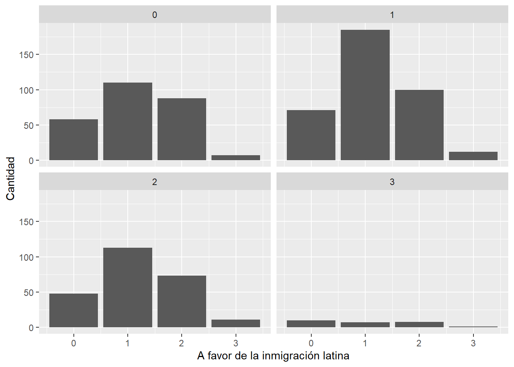

El ascenso de los discursos de odio: Rol de los medios de comunicación mediáticos
El ascenso de los discursos de odio: Formulación de la problemática migratoria en Chile
Durante el transcurso del nuevo milenio, en Chile, se ha evidenciado un cierto aumento en diferentes aspectos sobre los inmigrantes que llegan al país, lo cual ha producido opiniones que han variado demasiado a medida que las cifras sobre la cantidad de migrantes hayan ido en aumento, principalmente de origen latinoamericano, los cuales han producido una gran controversia para el país, aunque este fenómeno no ha sido excluyente en diferentes países de la región americana del globo, como puede ser en caso de Colombia o incluso en Estados Unidos. Esta tendencia al aumento de población migrante en Chile y en conjunto a demás problemáticas que atraviesa el país, ha traído consecuencias en diferentes dimensiones, tanto políticas, económicas, seguridad y morales para el Estado chileno. De este modo, Chile estaría en un escenario con ciertas complejidades en estas dimensiones, en donde, desde un punto de vista general, a la hora de identificar una problemática migratoria, la ciudadanía llega a un consenso ampliamente legitimado por sus pares, como puede ser por ejemplo el hecho que, a través de los resultados de la encuesta CADEM (2023) revelaría que un “77% de la población considera que la migración es mala para el país” y esto acompañado con, “el 86% cree que debe haber restricciones a la inmigración” (Nicolás Gissi and Hedilberto Aguilar 2023), estas afirmaciones revelarían una cierta legitimidad hacia un “discurso xenófobico y de”mano dura” en contra de personas de otros países, en donde, el foco de odio y repulsión se lo ha llevado principalmente los individuos migrantes venezolanos y colombianos, ya que estos han adquirido etiquetas negativas, como delincuentes o perturbadores del orden público, que de cierto modo, ha estandarizado la opinión de la ciudadanía en respecto a su actuar en el territorio chileno. Por tanto, nace un interés en torno a la intersubjetividad de los ciudadanos chilenos, en donde, se suele optar por una opinión de carácter discriminatoria hacia el migrante. De la misma forma, en torno a un interés sociológico en respecto al fenómeno, adquiere sentido el preguntarse ¿En qué medida la exposición de discursos políticos o mediáticos negativos influyen a la ciudadanía adoptar un discurso de caracter discriminatorio hacia la población migrante.
La importancia de una postura discriminatoria del ciudadano común hacia el migrante, nos presenta un escenario muy particular, ya que, el sentido común nos lleva a crear un imaginario colectivo hacia la imagen de la persona que busca establecerse en otro lugar ajeno el de su origen, que de cierto modo, invita a examinar el rol que cumple los medios de comunicación y su influencia en este discurso intersubjetivo, en donde se podría reconocer una especie de relación entre dos variables planteadas, que a mayor exposición a noticias negativas a la población migrante, peor será la opinión de los sujetos hacia ellos, promoviendo un rol discriminador hacia ellos. En este punto es importante recalcar que los medios de comunicación, ya no es particularmente sólo a los canales de noticias, sino que, también lo es internet y las redes sociales, las cuales se configuran como potentes “herramientas que colaboren en la creación de una sociedad más participativa en materia política y social” (Laura Bustos Martínez et al. 2019). Sin embargo, un fenómeno tan masivo como lo es internet, no presenta una sola cara, sino que, da lugar a la promoción de discursos de odio hacia diferentes grupos étnicos, lo cual, da el paso a las tan famosas noticias falsas o fake news, en donde, “pocas personas tienen la facultad, el tiempo y las habilidades de distinguir entre sesgos informativos, falsas noticias y simplificaciones” (Nicolás Gissi and Hedilberto Aguilar 2023), y esto resulta relevante a la hora de discutir los roles que tienen medios importantes de comunicación y la importancia que tiene las redes sociales a la hora de impactar e influir tanto en la percepción y actuar del ciudadano chileno hacia el migrante. De esta manera, entenderíamos que los roles que ejercen los medios de comunicación masivos influyen de distintas maneras el actuar y pensar de los ciudadanos chilenos sobre la población migrante. Entonces, a medida que un ciudadano chileno se encuentre expuesto a noticias mediáticas y de índole negativa acerca de algún acontecimiento que tenga lugar con una persona migrante, peor será su opinión sobre la población migrante, lo cual, permite y da paso a optar por un discurso discriminatorio. Por lo tanto, la creciente crisis migratoria y sus consecuencias sociales han producido una gran controversia en diferentes dimensiones para el Estado chileno, y para la propia ciudadanía, parece ser que el optar por posiciones discriminatorias resulta cada vez más un camino reconfortante, en donde, se le exige al gobierno medidas mucho más punitivas, dejando de lado soluciones acordes a los tratados gubernamentales, como los Derechos Humanos, debido que, existirían “muchos migrantes latinoamericanos reciben un trato discriminatorio al enfrentar las expulsiones u otras sanciones sin los estándares mínimos del debido proceso” (Daniel Quinteros and Quinteros 2016), lo cual, invita a la a la reflexión académica sobre esta pregunta direccionada hacia un problema estructural de la migración “¿estamos ante una crisis migratoria o ante una migración a causa de la crisis?” (Luciana Gandini et al. 2020) y claro, en primera instancia se evidencia que la crisis migratoria ha generado múltiples estragos sistémicos en el país trasandino, sin embargo, después de un breve análisis, podríamos pensar que la crisis migratoria solo es una respuesta a problemas estructurales de las naciones comprometidas de América Latina, como lo es en el caso venezolano.
Medidas de tendencia central de las variables
A partir de la base de datos proporcionada por Latinobarometro (2020), en donde se seleccionó algunas variables en función de la hipótesis planteada con anterioridad. En donde, se determinó utilizar la confianza en los medios de comunicación, a favor de la inmigración venezolana y a favor de la inmigración de la inmigración de personas pertenecientes a América Latina, todo esto a partir de las observaciones limitadas a las respuestas proporcionadas por los encuestados chilenos. De este modo, de primera instancia, observamos la tabla que indica las medidas de tendencia central de las variables en cuestión y sumando la clase social, la cual nos ayudará junto a sexo a evidenciar el comportamiento de las variables que corresponden a la hipótesis según estas variables demográficas. De esta manera, evidenciamos que la clase social que predomina para estas observaciones es la clase media baja, la cual expresa un promedio de 2.319, que dentro de las tablas de frecuencia se contabilizará con 345 casos, sin embargo, el hecho de que la media de la clase social se exprese de esa manera es debido también que la clase baja cuenta con 186 sujetos adherentes a esa categoría, lo cual, indica que la muestra proporcionada a nivel chileno se expresa principalmente en la clase social baja y media baja. En su contraparte, hallamos que la clase media se lleva el mayor número de casos, con 463 observaciones, pero la clase media alta tiene solo 24 observaciones, y para mayor asombro, en la categoría de la clase alta no encontramos personas identificadas en ese estrato social. Por lo tanto, la clase social, su mediana se expresa en que el 50% de los casos se halla en las categorías de media y clase bajas. Sin embargo, por lo dicho anteriormente por la clase media, la moda es de 3, la cual corresponde al número de categoría de respuesta asignada en la recodificación.
En la variable sobre a favor de la inmigración venezolana hacia el país, podemos identificar que la media de esta se manifiesta en la categoría negativo, expresando la posición de los sujetos en torno a esta variable, en la cual no estarían de acuerdo o a favor sobre que ciudadanos venezolanos lleguen al país. Y del mismo modo se evidencia tanto en la media como en su moda, en donde, el 50% afirma que, no estarían a favor de la inmigración de personas venezolanas al país, en donde las categorías muy negativo con (206) y la categoría “negativo” (464) evidencia la posición de los sujetos de investigación sobre la variable en cuestión. Más adelante veremos el comportamiento según otras variables en juego. Con una variable parecida a esta, a favor de la inmigración de ciudadanos latinoamericanos al país resulta tener un comportamiento parecido a esta variable, sin embargo, con ligeros cambios cuando más adelante observemos el gráfico. Esta variable presenta una media de 1.37, la cual corresponde a la categoría de respuesta de negativo, en donde sujeta 445 personas que marcaron estas categorías, y siguiendo esta línea, evidenciamos que, la mediana de esta variable, al igual que la anterior, manifiesta que el 50% de las personas marcaron las categorías muy negativo con 123, y negativo con 445 observaciones. Y la moda de la variable presenta el mismo comportamiento. De este modo, las personas tanto para las dos variables sobre si estar a favor de la inmigración latina o venezolana, se posicionan principalmente hacia un desacuerdo con las afirmaciones presentadas.
Ahora describiremos el comportamiento de una de las variables principales de la hipótesis planteada, la confianza en los medios de comunicación, que la mayoría se posiciona con poca confianza hacia los medios de comunicación, con 409 observaciones, que según dato se corresponde con la media, que presenta 1.05 de promedio. Y de esta misma forma, el 50% de las personas se hallan en las categorías de ninguna (0) con 290 casos, y poca (1) con 409. Por lo tanto, con bastante firmeza, la gran mayoría de personas no confía de manera general en los medios de comunicación, lo cual se le corresponde también la moda (1), que también representa la categoría poca confianza.
Tabla Descriptiva: Variables utilizadas
| Variable | Media | Mediana | Moda |
|---|---|---|---|
| Clase Social | 2.317073 | 2 | 3 |
| afav.venz | 1.159645 | 1 | 1 |
| afav.latin | 1.364745 | 1 | 1 |
| conf.md | 1.037694 | 1 | 1 |
Tablas de frecuencias: Variables categóricas
La primera variable que revisaremos es sobre la confianza en los medios de comunicación, la cual indica que su máxima categoría en torno a magnitud de observaciones se halla en “poca”, la cual tiene un total de 409 observaciones, de una muestra posible de 1018 casos. Y de la misma forma le sigue la categoría “ninguna”, que contiene un total de 290 observaciones. Por el otro lado de la lógica de la variable, sobre las personas que confían más en los medios de comunicación, hallamos la variable “algo” la cual cuenta con 288 observaciones, y del mismo modo, la categoría de respuesta “Mucha” tiene un total de 31 observaciones, la menor en función a esta categoría.
Confianza en Medios (x) <numeric>
# total N=902 valid N=902 mean=1.04 sd=0.82
Value | Label | N | Raw % | Valid % | Cum. %
------------------------------------------------
0 | Ninguna | 263 | 29.16 | 29.16 | 29.16
1 | Poca | 368 | 40.80 | 40.80 | 69.96
2 | Algo | 245 | 27.16 | 27.16 | 97.12
3 | Mucha | 26 | 2.88 | 2.88 | 100.00
<NA> | <NA> | 0 | 0.00 | <NA> | <NA>En respecto a la variable “A favor de la inmigración latina”, logramos evidenciar que la categoría de respuesta con mayor cantidad de observaciones es “Negativo”, con un total de 445 observaciones. Sin embargo, la segunda categoría con más observaciones es “Positivo”, con 399 datos. Y las categorías que manejan el menor número de observaciones son contradictorias entre sí, debido que, con una gran diferencia, la categoría “Muy negativo” cuenta con 123 observaciones, y la variable lógicamente contradictoria a esta es “Muy positivo” que cuenta con un total de 51 observaciones.
A favor: Latinos (x) <numeric>
# total N=902 valid N=902 mean=1.36 sd=0.76
Value | Label | N | Raw % | Valid % | Cum. %
----------------------------------------------------------
0 | Muy en desacuerdo | 113 | 12.53 | 12.53 | 12.53
1 | En desacuerdo | 390 | 43.24 | 43.24 | 55.76
2 | De Acuerdo | 356 | 39.47 | 39.47 | 95.23
3 | Muy de acuerdo | 43 | 4.77 | 4.77 | 100.00
<NA> | <NA> | 0 | 0.00 | <NA> | <NA>Y por último, la variable que sigue es parecida a la anterior, pero en la dirección que apunta es más específica, en donde, su foco de atención se halla en la inmigración venezonala. La variable “a favor de la inmigración venezolana” presenta algunos cambios que a lo largo del análisis descriptivo univariado iremos tratado. Esta variable presenta su categoría con mayor observaciones en “Negativo” con un total de 464, y le sigue, pero desde su contradicción, la categoría “Positivo” con 315 sujetos que marcaron esa opción. A esta categoría le sigue “Muy negativo” con un total de 206 observaciones, y por último, la categoría con la menor cantidad de observaciones es “Muy positivo” con tan solo 33 observaciones.
A favor: Venezolanos (x) <numeric>
# total N=902 valid N=902 mean=1.16 sd=0.79
Value | Label | N | Raw % | Valid % | Cum. %
----------------------------------------------------------
0 | Muy en desacuerdo | 187 | 20.73 | 20.73 | 20.73
1 | En desacuerdo | 415 | 46.01 | 46.01 | 66.74
2 | De Acuerdo | 269 | 29.82 | 29.82 | 96.56
3 | Muy de acuerdo | 31 | 3.44 | 3.44 | 100.00
<NA> | <NA> | 0 | 0.00 | <NA> | <NA>A través de esta breve exploración del comportamiento de estas variables visualizamos de primera instancia que las personas principalmente no confian en los medios de comunicación, en donde, si juntamos la categoría “Ninguna” y “Poca”, logramos evidenciar que, el 68,6% de las personas marcaron una de estas opciones, mostrando su desconfianza principalmente hacia los medios de comunicación. Del mismo modo, hallamos que la variable sobre la inmigración latina y el acuerdo sobre ella acumula entre la categoría “Muy negativo” y “Negativo” un total de un 55.8% del total de las observaciones recopiladas en la variable. Y de la misma forma, la variable sobre estar a favor de la inmigración venezolana, vemos una subida de porcentaje considerable, en donde las personas que marcaron “Muy negativo” y “Negativo” acumulan un total de 65,8% del total de las observaciones, evidenciando una negativa hacia la inmigración venezolana en particular hacia el Estado chileno. Cabe recalcar que, el siguiente trabajo estadístico utilizó y utilizará herramientas propias de la estadística descriptiva univariada, la cual no permite llegar a conclusiones satisfactorias en términos estadísticos, por lo tanto, nos limitaremos a describir el comportamiento de las variables, y hablaremos en términos de “asociación entre variables” más que hablar sobre relaciones causales entre ellas.
Ahora seguiremos con la observación y análisis descriptivo de los gráficos, los cuales contienen el comportamiento de las variables que configuran la hipótesis planteada en el presente trabajo para después detallar su comportamiento en función de la confianza en los medios de comunicación.
Inmigración Latina e Inmgración Venezolana
Con las variables seleccionadas en el presente estudio, buscamos explorar y describir el comportamiento de las variables en juego, en donde, detallaremos y describiremos el comportamiento de la variable a favor de la inmigración latinoamericana y la variable a favor de la inmigración venezolana al país. En donde, si observamos desde una perspectiva general las variables, podemos llegar a similares conclusiones, pero haciendo un especial tipo de análisis a la variable sobre la inmigración venezolana. Ambas variables presentan su mediana hacia la negativa sobre que los ciudadanos latinoamericanos y en especial enfoque, el venezolano se inserten en Chile, en donde con un 12,1% de las personas se posicionan como muy negativa hacia la inmigración latina, y en paralelo con sus categorías de respuesta, las personas también no estarían de acuerdo hacia la inmigración venezolana, en donde, la categoría de “muy negativa” y “negativa” en su conjunto suman 65,8% sobre la inmigración venezolana, mientras que, sobre la inmigración latina baja sustancialmente, con 55,8% de las respuestas, que representan hacia un desacuerdo a la inmigración latina. Las variables apuntan su sentido hacia el mismo punto, pero, se enfatizó en los inmigrantes venezolanos, ya que, actualmente, la ciudadanía chilena ha aumentado exponencialmente la población venezolana residente en el país, y con esto, en la cuestión se trató de cómo la ciudadanía se posiciona hacia una negativa especial hacia la población venezolana en temas de migración. Y de esta misma forma, lo podemos evidenciar en el comportamiento que adopta la variable en función de sus observaciones, ya que, los sujetos de investigación demuestran una mayor negativa hacia la inmigración venezolana en diferencia de la inmigración latinoamericana en general, lo cual, se representa a nivel descriptivo, en donde los sujetos demostraron un 10% más sobre el desacuerdo en comparación con la inmigración latina, por tanto se resaltaría que los sujetos presentan este desacuerdo, sobre su ingreso al país, especialmente mayor hacia los inmigrantes venezolanos (Ver gráfico 1).

Inmigración y Confianza en Medios
Y en función a lo mencionado anteriormente, lo cruzaremos con la variable confianza a los medios de comunicación. En donde, por decisiones metodológicas, no se realizó un índice sumativo entre las variables que tratan sobre la inmigración, ya que se busca en el presente estudio explorar y explicitar como la confianza en los medios de comunicación cambia su comportamiento en función de la diferenciación entre la inmigración venezolana y la inmigración latina. Las personas que confían en los medios de comunicación responden a un total de 312 observaciones, en la cual, en el gráfico 2, nos tenemos que fijar en la casilla 2, que explicita el comportamiento de las personas que confían en los medios de comunicación y su opinión al respecto de la inmigración de latinos al país. Esta detalla que, mayoritariamente, las personas que confían en los medios presentan una posición negativa hacia la inmigración, en donde las categorías de “negativo” y “muy negativo” son las que concentran y fijan la postura general que opta el gráfico 2 en la casilla 2, por lo tanto, de manera descriptiva, las personas que confían en los medios de comunicación optan por tener una postura negativa hacia la inmigración de latinos al país. Aunque, no debemos dejar de lado que en esta casilla, la categoría de respuesta que tiene más observaciones es la 2, que es la que representa una postura a favor de la inmigración latina, pero observando el gráfico nos damos cuenta de que manera general, las categorías 0 y 1 representa el mayor número de casos, que es la que representa una postura negativa hacia la inmigración latina, ya que en comparación, las categorías 2 y 3 no representa la mayoría de casos dentro de las personas que confían en los medios de comunicación. Pero, si vemos en este gráfico, en la casilla 1, observamos que las personas que confían poco en los medios de comunicación presentan un comportamiento similar que las personas que confían algo en los medios de comunicación, por lo cual se evidencia que, aunque las personas confíen o no en los medios de comunicación, su postura se centra en mayor medida hacia la negativa de la inmigración latina hacia el país trasandino.

Y de esta misma forma, pero en el caso específico de la variable que trata sobre si estar a favor de la inmigración venezolana en particular, en función de si los sujetos confían en los medios de comunicación. Observamos un comportamiento distinto en comparación con la variable anterior, ya que los medios de comunicación concentran de manera más intensa, una postura negativa hacia el ingreso de venezolanos al país, donde las categorías 1 y 2, que engloban la postura negativa, son las que ahora predominan absolutamente en el comportamiento de la variable. Y en contraposición, la casilla 1 del gráfico 3 presenta las personas que confían poco en los medios de comunicación, presenta el mismo comportamiento, en donde predomina la postura negativa hacia la inmigración venezolana, y lo mismo para las personas que no tienen ninguna confianza en los medios de comunicación, que es la casilla 0.

Por lo tanto, revisando los comportamiento y posturas que adquieren las observaciones en las variables, vemos que los sujetos se posicionan de una manera más negativa hacia la inmigración venezolana que hacia la inmigración latina en general. Por tanto, para ir concluyendo con el estudio, que ya habiendo repasado de manera descriptiva el análisis, podemos afirmar que existe un rol o posición negativa mayor sustancialmente hacia la población o migrantes venezolano que el resto de migrantes latinos, en donde los comportamientos de las variables indica que por lo menos el 65,8% de los sujetos de investigación se posicionan hacia esta dirección, lo cual, hacia los inmigrantes latinos se ve una postura también negativa hacia su ingreso, pero de menor medida en todas las observaciones descriptivas realizadas. Y ya tratando con la hipótesis planteada al inicio del trabajo, no podemos afirmar ni concluir que las personas por estar expuestos y confiar en los medios de comunicación tienden a orientar hacia una postura más negativa hacia la población migrante que viene a Chile, ya que, como se detalló anteriormente, aunque las personas confíen o no confíen en los medios de comunicación, se tiende de todas formas a optar por una postura negativa hacia la inmigración latina, y aún mayor hacia la inmigración venezolana. Sin embargo, se logró identificar que existe un rol más discriminatorio hacia los ciudadanos venezolanos que los ciudadanos latinos, por tanto, este estudio logró detallar el comportamiento y posturas de los sujetos de investigación sobre la confianza en los medios y la inmigración hacia Chile, aunque, no se pudo determinar si es que estas variables propuestas presentan una asociación positiva entre sí, pero sí logró explicitar que existe una postura diferente cuando se trata de abordar la inmigración venezolana versus la inmigración latina en general, esto puede ser por distintos factores los cuales faltarían por explorar, como por ejemplo que la base utilizada para este trabajo es del año 2020, y la versión más actualizada del año 2023 no contaba con las variables que se trató en este trabajo, por tanto, las conclusiones estadísticas se hallan limitadas. De este modo, la metodología empleada para realizar el análisis y comprobación de hipótesis tampoco cuenta con las herramientas adecuadas, ya que nos limitamos en la rama de la estadística descriptiva, por tanto, no podemos establecer relaciones causales con seguridad, y solo nos podemos limitar a afirmar asociaciones positivas entre las variables, aunque, para los datos e información trabajada se logró concluir que las variables sobre la inmigración hacia Chile y la confianza en los medios de comunicación trabajan como variables de independencia en función a determinados casos estadísticos. Por tanto, en un futuro se detallará más por este tema y buscaremos por más asociaciones sobre cómo los medios de comunicación pueden influir en las opiniones y posturas de los ciudadanos chilenos sobre la inmigración hacia Chile principalmente y también, buscar e explorar razones estadísticas del porqué cambian estas posturas si es que el ciudadano migrante es venezolano o residente de otro país de América Latina y el Caribe, pero por ahora nos limitaremos a recalcar este descubrimiento de la postura que optan los chilenos en particular cuando se habla de un inmigrante venezolano en comparación de un inmigrante del resto de países de América Latina y el Caribe.
Correlaciones de las variables de interés
Para la correlación y la posterior creación de índice ponderado de xenofobia, la base de datos se forzó a que sus variables sean numéricas, ya que de este modo es permitido el análisis de correlación de Pearson, permitiendo ver las asociaciones de las variables de la base de datos que se utilizará a partir de este punto, la cual, solo contiene las variables de interés a trabajar.
Ahora pasaremos a explorar e explicar un gráfico de correlación de Pearson, el cual cuenta con variables de interés nuevas en comparación a las anteriores trabajadas, en donde ahora encontraremos las siguientes variables, confianza en los medios de comunicación; a favor de la inmigración latina, a favor de la inmigración venezolana, a favor de la inmigración haitiana; los inmigrantes vienen a competir por nuestros puestos de trabajo; los inmigrantes causan un aumento del crimen; los inmigrantes son una carga para el estado. Una vez mencionada las variables a tomar en cuenta, he de recordar de que estas variables ahora tendrán un nuevo nivel de medición acorde a las respuestas para después componer un índice ponderado. Por tanto, el nivel de medición corresponde a una escala de acuerdo, la cual, el valor 0 es “Muy en desacuerdo”, valor 1 es “En desacuerdo”, valor 2 es “De acuedo” y valor 0 es “Muy de acuerdo”.
En el siguiente gráfico muestra las asociación de las variables, en donde, como se puede observar, las variables que presentan mayor asociación son “afav.venz” que es a favor de la inmigración venezolana y “afav.hait” que es a favor de la inmigración haitiana, de este modo, el puntaje de correlación de Pearson entrega que ambas variables estarían asociadas de manera positiva con un 0.76 puntos, lo cual estaríamos ante una relación entre las variables bastante fuerte (+0.5), lo cual, se ve reflejado también por el fenómeno que buscan medir ambas variables, ya que si revisamos las variables restantes que miden el grado de acuerdo sobre la inmiogración, que es la de “afav.latin” que es a favor de la inmigración latina, vemos que entrega puntajes parecidos. Por tanto, “afav.latin” con “afav.venz” tiene un puntaje de correlación de 0.68 puntos, indicando una asociación positiva, y del mismo modo con “afav.hait” el cual tiene un puntaje de 0.75 con “afav.latin”. Esto significa que todas las variables que miden el grado de acuerdo sobre la inmigración hacia Chile están fuertemente asociadas entre sí, las cuales, todas entregan un puntaje de r de Pearson mayor a 0.5, indicando que, a medida que aumenta una variable, la otra también lo hará, en donde, esta lógica se aplica para todas las variables y relaciones entre ellas. Cabe recalcar que este estadístico no menciona que variables son las independientes o dependientes, por tanto, estaríamos ante una asociación de tipo lineal positiva bidireccional en todas las relaciones de las variables sobre la inmigración, en donde, cada variable cuando aumenta, la otra aumentará en proporción según la escala de medición anteriormente explicitada y explicada.
En el caso de las variables que miden afirmaciones de acuerdo o desacuerdo, identificamos que la asociación entre “in.trabajo” y “in.carga” presentan un puntaje de Pearson de 0.52, lo cual significa que ambas variables estarían asociadas de manera positiva. Del mismo modo se observa con “in.trabajo” y “in.crimen”, las cuales presentan un puntaje de 0.42, siendo una asociación positiva medianamente fuerte. Y por último tenemos la relación positiva entre “in.crimen” y “in.carga”, las cuales presentan un puntaje de 0.48 puntos, en donde su asociación es medianamente fuerte. Lo anterior mencionado refleja que las variables que miden estas afirmaciones sobre la población migrante de carácter negativo estarían asociadas en promedio un 0.43 puntos de la correlación de Pearson, indicando que mayoritariamente estas variables tienen una relación bidireccional medianamente fuerte, y para el caso de las variables que miden el grado de acuerdo sobre la inmigración migrante es de 0.73, expresando que estas variables tienen una relación bidireccional realmente fuerte. Sin embargo, con respecto a la variable de confianza con los medios de comunicación “conf.md” su asociación con las demás variables es mayoritariamente con todas de independencia bidireccional.
En el lado contrario, encontramos que principalmente las asociaciones entre las variables de acuerdo sobre la migración y las variables que miden afirmaciones negativas sobre la población migrante estarían asociadas de forma negativa, pero con una fuerza débil principalmente en la asociación, Porque, el gráfico evidencia que la asociación negativa más grande es la de “afav.latin” y “in.carga” con un puntaje de -0.31, lo cual presenta un nivel de asociación moderado de tipo negativo, lo cual evidencia que a medida que sube una variable, la otra baja de forma proporcional, aunque siempre hay que tener en cuenta que se desconoce cual es la variable dependiente e independiente de este estadístico. Siguiendo revisando los resultados de estas correlaciones, encontramos de igual forma que la variable “in.carga” con la variable “afav.hait” encuentran un puntaje de correlación de -0.31 puntos, expresando una asociación negativa de las variables, de magnitud moderada. Y las demás asociaciones de variables se mueven en torno a esas magnitudes, en donde su significado aproximado simplemente se mueve de forma negativa entre un -0.20 y -0.31, lo que en general es una asociación negativa moderada o débil de las variables. Ahora, la observaremos en un gráfico de dispersión que presentará las asociaciones respaldando la información entregada anteriormente.
Ahora pasaremos con la construcción de dos índices ponderados que miden los niveles de Xenofobia de los encuestados hacia la población migrante, midiendo diferentes aspectos, como afirmaciones y su grado de acuerdo sobre que diferentes inmigrantes vengan hacia el país. Este índice fue creado a partir de una escala de medición estandarizada y que sigue la misma lógica entre cada una de las variables, en donde, el nivel de medición corresponde a una escala de acuerdo, la cual, el valor 0 es “Muy en desacuerdo”, valor 1 es “En desacuerdo”, valor 2 es “De acuedo” y valor 0 es “Muy de acuerdo”, los cuales, fueron extraídos a partir de las variables; a favor de la inmigración latina, a favor de la inmigración venezolana, a favor de la inmigración haitiana; los inmigrantes vienen a competir por nuestros puestos de trabajo; los inmigrantes causan un aumento del crimen; los inmigrantes son una carga para el estado. Que como se mencionó antes, miden el acuerdo sobre los inmigrantes, sus acciones y efectos a través de afirmaciones y precisamente, si es que las personas están a favor de su respectiva migración hacia la nación.
Este índice ponderado presenta pesos específicos, que acorde a la investigación previamente realizada, se asigno que la variable “afav.venz” presentará un peso de 40% del total del índice, de este modo, la variable que le sigue es “afav.latin” que contiene un 30% del total. Y la última variable de tipo a favor o no de la inmigración “afav.hait” cuenta con un 30% de la ponderación, este es la conformación del índice de la xenofobia que mide el grado de acuerdo hacia recibir inmigrantes de estos tipos de países y de toda latinoamerica.
Por otro lado, el segundo índice toma las variables “in.trabajo”; “in.carga” y “in.crimen”, en donde sus ponderaciones son 30%, 40% y 30% respectivamente, las cuales miden las afirmaciones sobre la población migrante.
Una vez mencionado los pesos de las variables, pasaremos a su respectiva fundamentación a partir de los descubrimientos del estudio. La variable “afav.venz” cuenta con la mayor ponderación debido que, con el respectivo análisis descriptivo de esta variable, se descubrió que las personas cuentan con una negación extra hacia este grupo en específico en comparación con la variable “afav.latin” que como vimos, contaban con una diferencia de alrededor de un 10% hacia la negación o en esta ocasión de un desacuerdo hacia la inmigración específica del migrante venezolano. Para la variable “afav.hait” se estableció un 30% de la ponderación debido que no representó mayores niveles o datos significativos para el análisis sobre un caso específico de población migrante hacia el país. Y para el indice de xenofobia 2 que toma las variables que miden las afirmaciones de carácter negativo de la inmigración de forma generalizada, considerando la variable de “in.carga” con la mayor ponderación debido que cuenta en el contexto chileno, en donde se entiende que el Estado debe ser “el lugar central en la disputa por los sentidos, prácticas y representaciones en torno a la definición de la cuestión migratoria. La regulación de los movimientos contribuye, en parte, a la construcción de la estaticidad del Estado” (Angélica Alvites Baiadera, Baiadera, and Angélica Alvites Baiadera 2012). Por tanto, como ocurre en el contexto chileno, se optó a darle mayor carga a esta variable, que representó una de las principales polémicas a la hora de tratar la cuestión migratoria. Mientras que las demás variables se optó por mantener los mismos pesos por términos metodológicos
En primera instancia, para revisar los índices, se presentará una tabla descriptiva indicando las medidas de tendencia central de “indicexen1” y “indicexen2” que corresponde al indice de xenofobia de los chilenos encuestados sobre el recibir inmigrantes y sobre afirmaciones de carácter discriminatorio hacia los inmigrantes respectivamente.
Min. 1st Qu. Median Mean 3rd Qu. Max.
0.000 1.000 1.000 1.233 2.000 3.000 Min. 1st Qu. Median Mean 3rd Qu. Max.
0.000 1.600 2.000 1.929 2.400 3.000 Se observa que principalmente, los chilenos se mueven en el primer indice, en las categorías de respuesta de 1, la cual representa el grado de desacuerdo hacia que inmigrantes de diferentes nacionalidades migren hacia el país. Y en correspondencia, con el índice de xenofobia 2, se indica que los sujetos en promedio estarían inclinado en la categorías de acuerdo sobre afirmaciones de carácter discriminador de esta población, ya que la mediana de este índice es 2, el cual indica que los inmigrantes provocan efectos negativos en la nación de distinto tipo, a partir de las creencias y opiniones de las personas. Es decir, el 50% de las personas afirma que los inmigrantes causan el aumento del crimen, son una carga para el estado y que vienen a quitar el trabajo a los chilenos. Y claro, de este modo, vemos que la mediana del primer índice indica que las personas no estarían de acuerdo en recibir inmigrantes de nacionalidades como la haitiana, venezolana o del resto de los países de América Latina, por lo tanto, el 50% de los encuestados no estarían de acuerdo en recibir inmigrantes de estas nacionalidades mencionadas.
Ahora presentaremos un histograma para cada índice que identifica de mejor manera cómo la xenofobia se despliega en los sujetos de estudio, de nacionalidad chilena. El primer histograma indica sobre el grado de acuerdo de recibir inmigrantes que hemos tratado durante todo el estudio
Este histograma identificamos que la gran mayoría de respuesta de los encuestados se dirige hacia el desacuerdo de que los inmigrantes de nacionalidades dentro de América Latina vengan al país. centrándose en las categorías de 0 y 1, que corresponden a “Muy en desacuerdo” y “En desacuerdo” respectivamente. Y muy pocos casos se encuentran en las categorías del acuerdo hacia su ingreso al país.
Ahora se presentará el segundo histograma que indica la respuestas de los encuestados sobre los grados de acuerdo sobre afirmaciones en términos negativos de la población migrante.
Vemos que la distribución se mueve principalmente hacia el “Muy de Acuerdo” y “De acuerdo” que son los valores 2 y 3 respectivamente. Ya que como se mencionó antes, la gran mayoría de personas perciben a la población migrante de América Latina como portadores de efectos negativos en la nación.
Estos dos índices ponderados elaborados indican que los grados de xenofobia de los sujetos chilenos, en estas dos dimensiones tratadas, son altos, en donde se observa que predomina un rechazo hacia el ingreso de migrantes al país, y del mismo modo, predomina el grado de acuerdo hacia afirmaciones en términos negativos de la población migrante. Por tanto, de manera generalizada, se marca una tendencia hacia el rechazo de estas personas, adjudicándoles causas negativas en diferentes áreas del país, ya sea en términos de seguridad nacional o en términos de decrecimientos económicos a costa de su llegada y establecimiento paulatino en el país, en donde, el ciudadano chileno opta por un discurso de odio hacia el migrante. En donde ambos índices ponderados demuestran de manera estadísticamente significativa que los chilenos optan por este tipo de discurso. Aunque cabe recalcar que este análisis debe ser más profundo e indagando mayor cantidad de variables para sacar conclusiones acordes a la validez externa en términos de calidad metodológica en las ciencias sociales.